3-4-repo
1.“炼丹”速度迎来重大突破¶
之前我不断尝试训练指令时留下大量僵尸进程在GPU中，导致了训练一个epoch要10分钟，这次我清理干净之后再运行，速度显著变快了！！！！！！
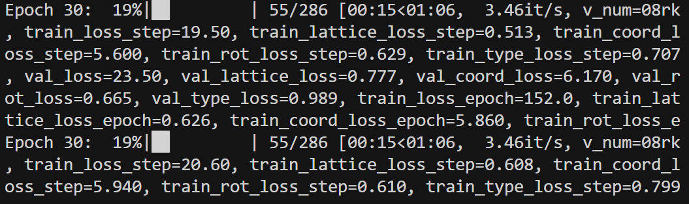
2.训练完成¶
2.1训练过程loss图示¶
前半段
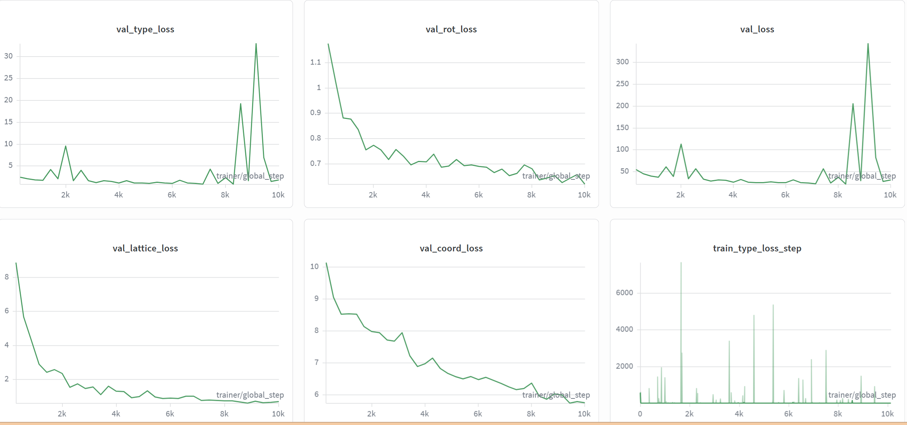
后半段
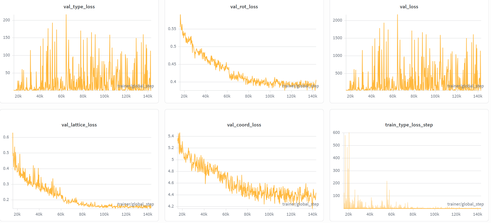
与论文提供的chpt对比

训练过程 Loss 曲线分析¶
- 收敛瓶颈：
val_lattice_loss（晶格 Loss）在训练中后期进入平原期，波动极小。这解释了为什么模型倾向于预测“安全”的平均体积，因为这样可以获得稳定的低 Loss，但失去了对极端值的敏感度。 - 异常跳变：
val_type_loss在后期出现剧烈刺状跳变， - 可能原因：
- building block 类型嵌入不稳定
- 分类 head 学习率偏高？
- 不平衡类别导致 loss 爆发
2.2选择min val_loss的ckpt以及last ckpt进行测试¶
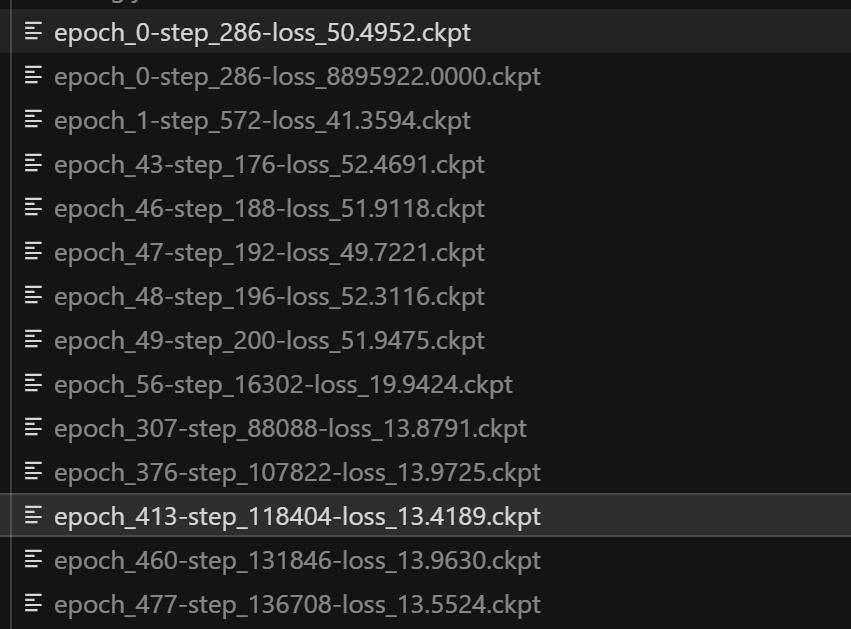
测试代码¶
#/home/liem/data/mofbfn/checkpoints/logs/mof-csp/mof_dng_cif_200_inf/ckpt/epoch_413-step_118404-loss_13.4189.ckpt
#/home/liem/data/mofbfn/checkpoints/logs/mof-csp/mof_dng_cif_200_inf/ckpt/epoch_477-step_136708-loss_13.5524.ckpt
# 设置环境变量以防库冲突
export LD_LIBRARY_PATH=/home/liem/.local/share/mamba/envs/mof-bfn/lib:$LD_LIBRARY_PATH
PYTHONPATH=. python -m experiments.infer \
experiment.wandb.name=infer_dng_test \
inference.ckpt_path=/home/liem/data/mofbfn/checkpoints/logs/mof-csp/mof_dng_cif_200_inf/ckpt/epoch_477-step_136708-loss_13.5524.ckpt \
inference.inference_dir=/home/liem/MOF-BFN/infer_results_test_3_4_last_ckpt
python -m postprocess.assemble \
--res_path /home/liem/MOF-BFN/infer_results_test_3_4_last_ckpt/raw_results.pt \
--bb_z_path /home/liem/data/mofbfn/datasets/dng/bb_emb_space_tot_z.pt \
--bb_blocks_path /home/liem/data/mofbfn/datasets/dng/bb_emb_space_tot_blocks_processed.lmdb \
--max_process 1000
# 检查连通性 (是否形成了完整的 3D 骨架)
python -m evaluation.connect_check \
--res_path /home/liem/MOF-BFN/infer_results_test_3_4_last_ckpt/raw_results.pt \
--bb_z_path /home/liem/data/mofbfn/datasets/dng/bb_emb_space_tot_z.pt \
--bb_blocks_path /home/liem/data/mofbfn/datasets/dng/bb_emb_space_tot_blocks_processed.lmdb \
--max_process 1000
#有效性检查 (Validity Check)
python -m evaluation.validity_check \
--res_path /home/liem/MOF-BFN/infer_results_test_3_4_last_ckpt/samples \
--max_process 1000
测试结果截图¶
min val_loss的ckpt¶
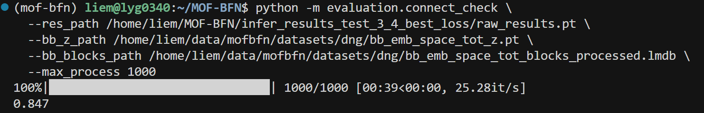
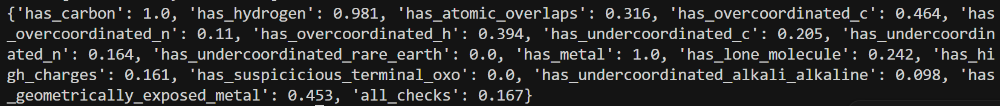
last ckpt¶
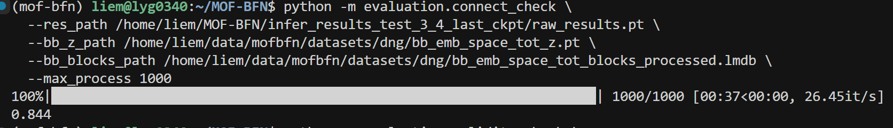

validity效果对比¶
| 检查项 (Metric) | val_loss最小的ckpt | last ckpt | 论文最佳值 (Bold) |
|---|---|---|---|
| has_carbon ↑ | 1.000 | 1.000 | 1.000 |
| has_hydrogen ↑ | 0.981 | 0.991 | 0.975 |
| has_atomic_overlaps ↓ | 0.316 | 0.295 | 0.115 |
| has_overcoordinated_c ↓ | 0.464 | 0.460 | 0.193 |
| has_overcoordinated_n ↓ | 0.110 | 0.137 | 0.049 |
| has_overcoordinated_h ↓ | 0.394 | 0.420 | 0.180 |
| has_undercoordinated_c ↓ | 0.205 | 0.197 | 0.182 |
| has_undercoordinated_n ↓ | 0.164 | 0.154 | 0.154 |
| has_undercoordinated_rare_earth ↓ | 0.000 | 0.000 | 0.000 |
| has_metal ↑ | 1.000 | 1.000 | 1.000 |
| has_lone_molecule ↓ | 0.242 | 0.260 | 0.186 |
| has_high_charges ↓ | 0.161 | 0.173 | 0.069 |
| has_suspicious_terminal_oxo ↓ | 0.000 | 0.000 | 0.000 |
| has_undercoordinated_alkali_alkaline ↓ | 0.098 | 0.070 | 0.027 |
| has_geometrically_exposed_metal ↓ | 0.453 | 0.431 | 0.304 |
| all_checks (通过率) ↑ | 0.167 | 0.200 | 0.350 |
-
修改后模型效果明显不如原来的模型
-
过多结构异常：
-
has_atomic_overlaps 明显偏高
- has_overcoordinated_c/n/h 高
- has_geometrically_exposed_metal 偏高
- has_lone_molecule 偏高
说明：
模型在几何一致性与配位约束上明显弱于论文模型
晶胞大小分布测试¶
#晶胞大小分布
/home/liem/.local/share/mamba/envs/mof-bfn/bin/python - <<'PY'
import glob
import numpy as np
cifs = sorted(glob.glob('/home/liem/MOF-BFN/infer_results_test_3_4_last_ckpt/samples/pred_*.cif'))
print('cif_count', len(cifs))
vols = []
bad = []
# Prefer pymatgen for robust CIF parsing
try:
from pymatgen.core.structure import Structure
except Exception as e:
raise RuntimeError(f'pymatgen import failed: {e}')
for p in cifs:
try:
s = Structure.from_file(p)
vols.append(float(s.lattice.volume))
except Exception as e:
bad.append((p, str(e)))
vols = np.asarray(vols, dtype=np.float64)
print('parsed', vols.size, 'failed', len(bad))
if bad:
print('first_fail', bad[0][0], bad[0][1][:200])
if vols.size:
print('mean', vols.mean(), 'std', vols.std(), 'min', vols.min(), 'max', vols.max())
for p in [0,1,5,25,50,75,95,99,100]:
print(f'p{p:>3}', np.percentile(vols, p))
logv = np.log10(vols)
print('log10(V) p1/p50/p99', np.percentile(logv,1), np.percentile(logv,50), np.percentile(logv,99))
# plotly html
try:
import plotly.express as px
fig = px.histogram(x=logv, nbins=80, labels={'x':'log10(pred_volume)'}, title='Generated samples: log10(pred_vol)')
out = '/home/liem/MOF-BFN/infer_results_test_3_4_last_ckpt/samples/pred_log10vol_hist.html'
fig.write_html(out)
print('saved', out)
except Exception as e:
print('plotly failed/absent:', e)
PY
min val_loss晶胞分布¶
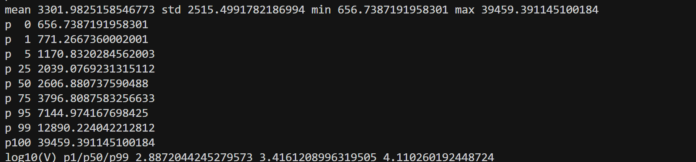
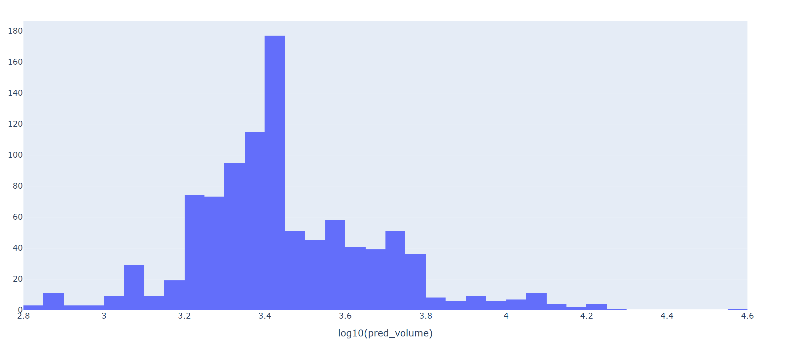
last ckpt 晶胞分布¶
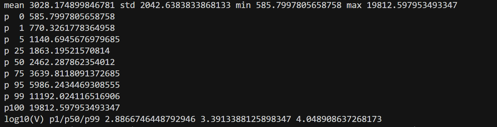
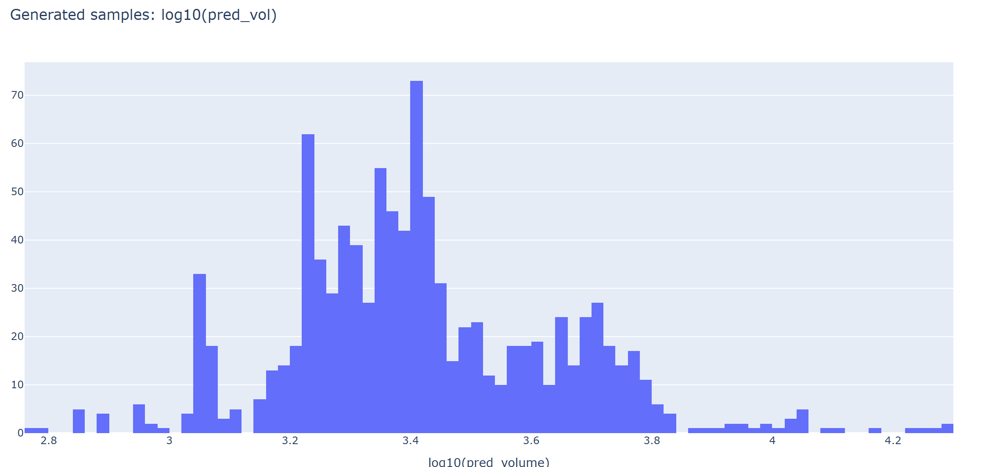
train data 晶胞分布¶


晶胞大小分布对比¶
训练数据：
- 分布更宽
- 长尾存在大体积结构
我的模型：
- 分布塌缩
- 极端值缺失
总结¶
- 可能是因为我对体积的惩罚过重，导致模型过于保守，不敢预测大晶胞
第一次实验最终总结¶
本轮实验的核心发现：
- 模型成功收敛但出现分布塌缩以及局部剧烈刺状跳变
- 可能是几何约束导致模型风险规避
- Validity 低于论文结果
- 生成晶胞体积较小问题没有改善，拓扑合法性倒是出现看新问题。
Q1：有没有可能是因为训练轮数不够多？因为论文给的ckpt是两千多个epoch
- 师兄答： 我觉得说修改之后表现差还为时过早，毕竟现在看起来只有lattice loss有收敛了的样子，其他的几个还在接着下降；现在在log空间做val loss还是很保守本质上还是MSE loss的问题，可以换成log-normal来试试； 多目标的模型优化本身就是牵一发而动全身，我们目前要关注能不能通过改lattice loss来单纯优化lattice这一个指标，其他的loss得通过高级点的方法（比如说各个loss算grad然后正则），暂时不用考虑太多
3. 第二次实验准备¶
目标¶
-
跑1000个epoch，让每一项loss都收敛
-
在log空间做val loss还是很保守，本质上还是MSE loss的问题，换成log-normal
小样本测验1¶
- 将MSE loss换成log-normal
-
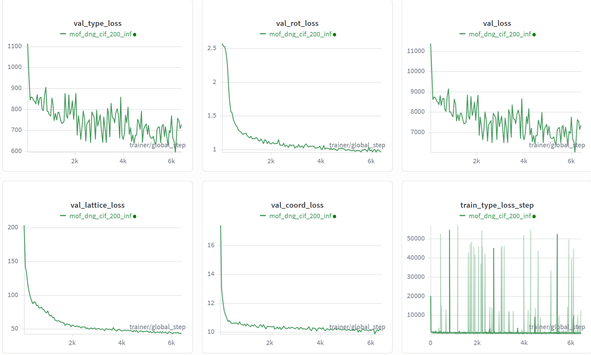
-
结果： type 尖刺严重
小样本测验2¶
- type 头单独 LR（降 30–50%），在同一小样本设置下再跑 50–100 epoch，看 type 尖刺和 validity/overcoordinated/lone molecule 是否改善
def configure_optimizers(self):
# type 头单独 LR（降 30–50%）以减轻 type loss 尖刺，其余参数用 base lr
opt_cfg = dict(omegaconf.OmegaConf.to_container(self._exp_cfg.optimizer, resolve=True))
type_lr_scale = opt_cfg.pop('type_lr_scale', 0.6)
base_lr = opt_cfg.get('lr', 1e-4)
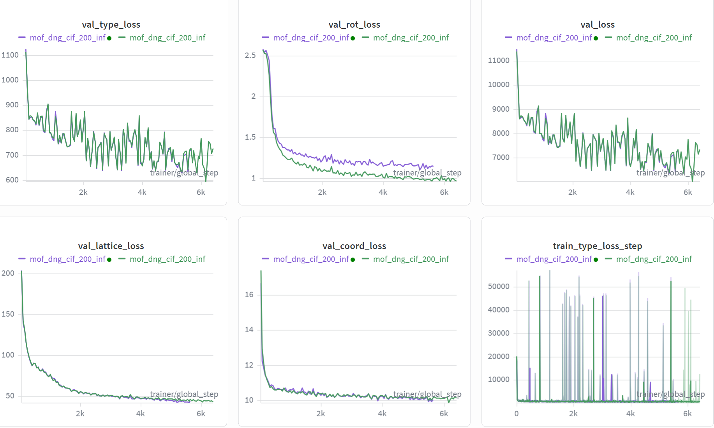
-
结果：我修改了type loss的lr，但是得出的结果（紫线）和上一次（绿线）基本重叠在一起
-
微调效果不加，我就准备用测验2的配置直接正式训练
正式训练¶
cd ~/MOF-BFN
mkdir -p logs
PYTHONPATH=. \
LD_LIBRARY_PATH=/home/liem/.local/share/mamba/envs/mof-bfn/lib:$LD_LIBRARY_PATH \
CUDA_VISIBLE_DEVICES=3,4 \
nohup python experiments/train.py \
--config-dir configs \
--config-name bfn_base_bhm_cond \
experiment.num_devices=2 \
experiment.wandb.project=mof-csp-exp2 \
experiment.trainer.strategy=ddp \
experiment.trainer.gradient_clip_val=0.5 \
experiment.trainer.max_epochs=1000 \
> logs/second_exp_full.log 2>&1 &
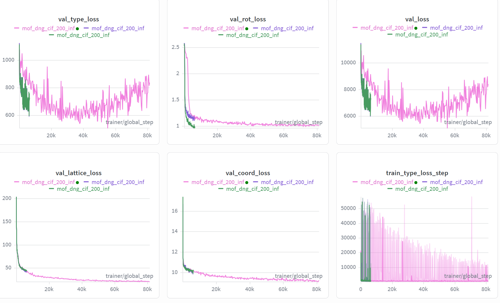
目前感觉情况不容乐观，怎么跑出了U型曲线？？？先再跑几个小时，静观其变吧。